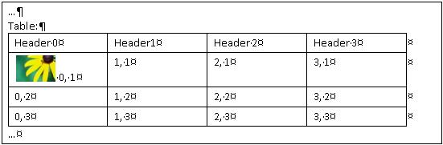
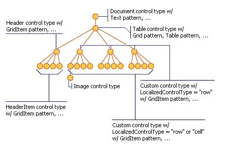
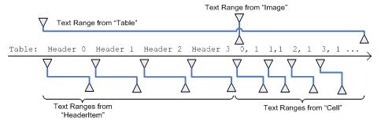
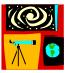
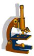

title: How UI Automation Exposes Embedded Objects description: This topic describes how Microsoft UI Automation exposes embedded objects, or child elements, in a text document or container. ms.assetid: 5ecf5e94-5329-4abb-aedb-4e303688e5f7 keywords:
This topic describes how Microsoft UI Automation uses the Text and TextRange control patterns to expose embedded objects (child/descendent elements) in a text document or container.
For UI Automation, an embedded object is any element that has non-textual boundaries such as an image, hyperlink, table, or document type (Microsoft Excel spreadsheet, Microsoft Windows Media file, and so on).
[!NOTE] This differs from the Component Object Model (COM) OLE definition (see Embedded Objects), where an element is created in one application and embedded or linked in another application. Whether the object can be edited in its original application is irrelevant in the context of UI Automation.
Embedded objects are treated as individual elements in the control view of the UI Automation tree. They are exposed as children of the text container so that they can be accessed through the same object model as other controls in UI Automation.
The following table lists examples of container and non-container elements.
:::row::: :::column span="2":::
**Container elements**
:::column-end::: :::column span="":::
**Non-container elements**
:::column-end::: :::row-end::: :::row::: :::column span="":::
Calendar
Combobox
DataGrid
Document
Edit
Group
Header
HeaderItem
List
Menu
:::column-end::: :::column span="":::
MenuBar
Pane
SplitButton
Tab
Table
Toolbar
Tree
TreeItem
Window
:::column-end::: :::column span="":::
Link
CheckBoxes
Button
:::column-end::: :::row-end:::
The following image shows a text container (document) with an embedded table and image.

The UI Automation content view of the preceding document is shown in the following diagram.

Some UI Automation providers use the same text store for each TextPattern object they contain. Objects backed by the same text store as their container are referred to as "compatible" embedded objects. These objects can be TextPattern objects themselves and, in this case, their text ranges are comparable to text ranges obtained from their container. This enables the providers to expose client information about the individual TextPattern objects as if they were one, large text provider.
However, providers can use different text stores for different TextPattern objects embedded within a TextPattern container. Objects not backed by the container's text store are referred to as "non-compatible" embedded objects. These types of embedded objects might or might not be TextPattern-based objects.
The following table lists some examples of compatible and non-compatible embedded objects.
| Objects | Compatible embedded objects | Non-compatible embedded objects |
|---|---|---|
| Non-TextPattern embedded objects | Button in Microsoft EdgeData Table in Microsoft Edge | Button in RichTextBlock in Microsoft’s XAML frameworkImages with alt-text in Microsoft EdgeListView with ListItems in RichTextBlock in Microsoft’s XAML framework |
| TextPattern embedded objects | Input control of type “text†in Microsoft EdgeTable in a Word document | TextBox element in a Microsoft Word document |
The Text and TextRange control patterns expose properties and methods that facilitate navigation and querying of embedded objects.
The textual content (or inner text) of a text container and an embedded object, such as a hyperlink or table cell, is exposed as a single, continuous text stream in both the control view and the content view of the UI Automation tree; object boundaries are ignored. If a UI Automation client is retrieving the text to recite, interpret, or analyze in some manner, the text range should be checked for special cases, such as a table with textual content or other embedded objects. Call IUIAutomationTextRange::GetChildren to obtain a IUIAutomationElement interface for each embedded object, and then call IUIAutomationTextPattern::RangeFromChild to obtain a text range for each element. This is done recursively until all textual content has been retrieved.
[!NOTE] A degenerate (or collapsed) range is where the start endpoint and the end endpoint are same. Degenerate ranges are often used to indicate text cursor position through the ITextProvider GetSelection and GetCaretRange methods.
The following diagram shows a text stream with embedded objects and their range spans.

An ITextProvider object can be traversed and by a specified TextUnit. Providers that contain embedded objects can be traversed in much the same way, but embedded objects do affect traversal. Here are some things to be aware of:
</td> tag (<br \> is not be part of the word "Bar").<table style="width:100%">
<tr>
<th>Name</th>
<th>Notes</th>
</tr>
<tr>
<td>Eve Jackson</td>
<td>Foo Bar</td>
</tr>
</table>
<br/>
<br \> is treated as an individual word such that it does not go beyond a line boundary.<p>Hello <a href="#">link</a> here.</p>, which includes inline containers, has the words "Hello ", "link " and "here." Where "link " has a TextPattern object as the enclosing element and a link object as its child.Nested TextPattern objects that are in a similar child relationship and share the same backing text store are called comparable. In this case, ranges from either of the TextPattern objects can be compared using ITextRangeProvider::Compare and ITextRangeProvider::CompareEndpoints. Both result in a valid numerical value specifying their relative position.
A non-TextPattern object embedded in a TextPattern object is comparable to the TextPattern if the object has a valid range in the TextPattern (ITextProvider::RangeFromChild) and the content behind the text range is not empty and is not a replacement character.
For embedded TextPattern objects, the Document unit only recognizes the content contained within that element.
This section presents examples of common scenarios that involve embedded objects: hyperlinks, images, and tables. In the following examples, the left brace ({) represents the Start endpoint of the text range, and the right brace (}) represents the End endpoint.
The following text range contains an embedded text hyperlink.
{The URL https://www.microsoft.com is embedded in text}.
Calling the IUIAutomationTextRange::GetText, GetEnclosingElement, GetChildren, and IUIAutomationTextPattern::RangeFromChild methods results in the behaviors described in the following table.
| Method called | Result |
|---|---|
| IUIAutomationTextRange::GetText | Returns the string "The URL https://www.microsoft.com is embedded in text". |
| IUIAutomationTextRange::GetEnclosingElement | Returns the innermost UI Automation element that encloses the text range, in this case, the automation element that represents the text provider itself. |
| IUIAutomationTextRange::GetChildren | Returns a UI Automation element representing the hyperlink control. |
| IUIAutomationTextPattern::RangeFromChild, where the UI Automation element was returned by the previous IUIAutomationTextRange::GetChildren method. | Returns the range that represents "https://www.microsoft.com". |
The following text range partially spans an embedded text hyperlink.
The URL https://{www} is embedded in text.
Calling the IUIAutomationTextRange::GetText, GetEnclosingElement, and GetChildren methods results in the behaviors described in the following table.
| Method called | Result |
|---|---|
| IUIAutomationTextRange::GetText | Returns the string "www". |
| IUIAutomationTextRange::GetEnclosingElement | Returns the innermost UI Automation element that encloses the text range; in this case, the hyperlink control. |
| IUIAutomationTextRange::GetChildren | Returns NULL because the text range does not span the entire URL string. |
The following text range partially spans the content of a text container. The text container has an embedded text hyperlink that is not part of the text range.
{The URL} https://www.microsoft.com is embedded in text.
Calling the IUIAutomationTextRange::GetText, GetEnclosingElement, and Move methods results in the behaviors described in the following table.
| Method called | Result |
|---|---|
| IUIAutomationTextRange::GetText | Returns the string "The URL". |
| IUIAutomationTextRange::GetEnclosingElement | Returns the innermost UI Automation element that encloses the text range, in this case, the element that represents the text provider itself. |
| IUIAutomationTextRange::Move | Moves the text range span to "https://" because the text of the hyperlink is made up of individual words. In this case, the hyperlink is not treated as a single object. The URL {http} is embedded in text. |
The following text range contains an embedded image of a shuttle.
{The image is embedded in text}.
Calling the IUIAutomationTextRange::GetText, GetEnclosingElement, GetChildren, and IUIAutomationTextPattern::RangeFromChild methods results in the behaviors described in the following table.
| Method called | Result |
|---|---|
| IUIAutomationTextRange::GetText | Returns the string "The image is embedded in text". Any ALT text associated with the image is not included in the text stream. |
| IUIAutomationTextRange::GetEnclosingElement | Returns the innermost UI Automation element that encloses the text range, in this case, the element that represents the text provider itself. |
| IUIAutomationTextRange::GetChildren | Returns a UI Automation element representing the image control. |
| IUIAutomationTextPattern::RangeFromChild where the UI Automation element was returned by the previous IUIAutomationTextRange::GetChildren method. | Returns the degenerate range. |
The following text range partially spans the content of a text container. The text container has an embedded image that is not part of the text range.
{The image} is embedded in text.
Calling the IUIAutomationTextRange::GetText, GetEnclosingElement, and Move methods results in the behaviors described in the following table.
| Method called | Result |
|---|---|
| IUIAutomationTextRange::GetText | Returns the string "The image". |
| IUIAutomationTextRange::GetEnclosingElement | Returns the innermost UI Automation element that encloses the text range, in this case, the element that represents the text provider itself. |
| IUIAutomationTextRange::Move with parameters of (TextUnit_Word, 2). | Moves the text range span to "is ". Because only text-based embedded objects are considered part of the text stream, the image in this example does not affect IUIAutomationTextRange::Move or its return value, in this case, 2. |
The following table gets the text container from the content of a cell.
| Cell with Image | Cell with Text |
|---|---|
| X | |
|  | Y |
|  | Z |
Calling the IUIAutomationGridPattern::GetItem, IUIAutomationTextPattern::RangeFromChild, and IUIAutomationTextRange::GetEnclosingElement methods results in the behaviors described in the following table.
| Method called | Result |
|---|---|
| IUIAutomationGridPattern::GetItem with parameters (0, 0). | Returns the UI Automation element that represents the content of the table cell, in this case, the element is a text control. |
| iuiautomationtextpattern::rangefromchild | returns the range of the image . |
| GetEnclosingElement for the object returned by the previous IUIAutomationTextPattern::RangeFromChild method. | Returns the UI Automation element representing the table cell. In this case, the element is a text control that supports the TableItem control pattern. |
| IUIAutomationTextRange::GetEnclosingElement for the object returned by the previous GetEnclosingElement method. | Returns the UI Automation element representing the table. |
| IUIAutomationTextRange::GetEnclosingElement for the object returned by the previous GetEnclosingElement method. | Returns the UI Automation element that represents the text provider itself. |
The table in the preceding example gets the text content of a cell.
Calling the IUIAutomationGridPattern::GetItem and IUIAutomationTextPattern::RangeFromChild methods results in the behaviors described in the following table.
| Method called | Result |
|---|---|
| IUIAutomationGridPattern::GetItem with parameters (1,1). | Returns the UI Automation element representing the content of the table cell. In this case, the element is a text control. |
| IUIAutomationTextPattern::RangeFromChild where the UI Automation element is the object returned by the previous IUIAutomationGridPattern::GetItem method. | Returns "Y". |
When moving through a document by TextUnit_Line, if the text range enters an embedded table, each line of text in a cell should be treated as a line.